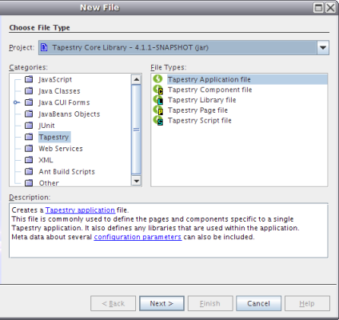
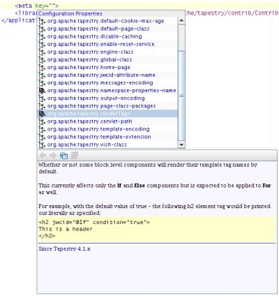

Meet a NetBeans Module Writer: Andreas Andreou
Feedback
Andreas Andreou |
| Andreas's Hot Links:
|
Andreas resides in Athens, in Greece, and is a big Tapestry enthusiast. Here,
he shares his experiences creating a NetBeans module that provides tooling for Tapestry.
Hi, who are you and where are you from?
Hi, my name is Andreas Andreou, a Cypriot who was born and raised in Greece.
What do you do in your every day life?
Well, in theory I'm supposed to be trying to concentrate on my PhD studies at the National and Kapodistrian University of Athens.
In practice though, I work as an independent Java consultant, specializing in web application development. I'm also a committer for Apache
Tapestry (http://tapestry.apache.org), which is a fascinating framework for web development.
I am also
the current lead developer of Tacos (http://tacos.sf.net), which deals with Ajax enabled
components for Tapestry.
How long have you been using NetBeans and why?
Since Sep '06. Mostly started out of curiosity... I simply wanted to see how it now compares with Eclipse and IntelliJ Idea.
I had also originally used NetBeans in 2002, but it didn't quite feel right for me back then.
Anyway, I believe it was the screenshots on Geertjan's blog that motivated me to try
it out again. The version I tried was NetBeans IDE 5.5 Beta 1.
It was a fun experience, which I hadn't expected it to be, and it continues to be fun.
You've been working on a Tapestry support module. Why?
Oh, there are several reasons:
- I'm completely in love with Tapestry... Thank god my soon-to-be wife is so understanding!
- We already had support for Tapestry in the other two main IDEs... so NetBeans was lagging behind for us in that respect.
- It's also not easy for someone to go over Geertjan's blog entries and not feel empowered to create
whatever plugin he decides. Those entries are like a constant reminder: 'Hey, you can do everything,
and hey, here's how!'... I'd be a fool not to take the bait.
- Finally, I've been programming Java web applications continuously for the last
three years, so I just wanted to see how it feels to work with Swing for a change.
What are the main features that you created?
Well, without going into too much detail, here's
what you normally deal with when using Tapestry:
- Every web page (Home.html) is usually associated with a Java source
file (Home.java) and, before Tapestry 4 which includes support for annotations,
with an XML configuration file (Home.page). Additionally, you can optionally have
per page localization files (Home.properties, Home_el.properties, ...) though
many users prefer global (per application) localization files.
- Same as above happens for every component. And those components are your
building blocks, you use them to construct the pages. So, you normally have 2-3 files for every page and component and most of the
time they reference each other. Simple support for hyperlinks (I call it "CTRL + clicking") and
autocomplete would vastly increase productivity. I also expect to see productivity gains
when drag and dropping components into pages or into other components... the available
components could be dragged either from a component palette or directly
from the Projects or Files windows.
- Tapestry uses Hivemind (http://hivemind.apache.org)
a services and configuration microkernel.
You use it to inject your services, Tapestry's objects and services, Spring beans, etc.,
into pages and components. That injection can be specified either with an annotation or
in the configuration files and the list of available services is enormous
(http://tapestry.apache.org/tapestry4/tapestry/hivedocs/index.html), though you'd
only need a few for your every day needs. Anyway, again autocomplete support
and integrated help can save many development hours.
So, all of these more or less constitute the target feature set that nbtapestrysupport
(https://nbtapestrysupport.dev.java.net/)
aims to provide. Here's what's currently available:
- Automatic registration of Tapestry's DTD allowing basic autocomplete in XML files.
- Autocomplete in Tapestry configuration files for class names, referenced files and several
other commonly used attributes.
- Hyperlink support in Tapestry configuration files for class names (opens Java source file)
and referenced files (opens file).
- Integrated Google search for Tapestry libraries.
- Templates for all kinds of Tapestry files.
- Very basic support for a component palette with drag and drop code snippets.
Here's a screenshot to give you an idea:

And here's another one:

Which NetBeans APIs did you use?
The plugin uses many different NetBeans APIs but I'm currently investigating and trying to get familiar with even more parts of it.
So, for starters, one should begin with the FileSystem API.
It is nicely written, pretty easy to understand and you'll almost always
need something from it. Web APIs is another important library, especially for web-related modules. It encapsulates and configures your web
project and provides many utilities for common tasks like informing the location of the document base and of the WEB-INF folder, the
configured classpath settings, etc.
Both these APIs enable nbtapestrysupport to provide hyperlinks.
They allow searching for the CTRL + clicked resource in many different
places. Once the resource is found, you'll need to take a look at the Datasystems API
and the Nodes API to find how to make the IDE
open it.
All these can be studied at the NetBeans API List (http://www.netbeans.org/download/dev/javadoc/)
and I believe them to be a good
starting point for getting to know how to interact with and utilize the powers of NetBeans.
What would you say to developers who use a framework but have no
tooling support for it in NetBeans?
You mean apart from switching to Tapestry..? (LOL) Well...
- Just grab the sources of similar
projects (nbfaceletssupport have also recently released theirs).
- Read a few must-read blogs and tutorials.
- Start coding!
What are you favorite/least favorite parts of the API's?
I can't really say that I have a favorite or a least favorite part of the API's, though there are
some naming conventions I don't like... Try typing "Utilities" in a Java
file and hit CTRL + Space... you'll get many many suggestions because most of the
APIs include such a class. Having said that, I wouldn't mind suggesting one project-related
utility method I'd like included... createLibrary(). It would assist in bundling
several different JARs in a new library.
What do you think about the IDE?
As I previously mentioned, NetBeans has already made giant steps
forward. It has become an IDE that I gladly recommend to my clients and
partners. Additionally, I currently see it as the IDE that has the
biggest momentum and potential in the Java world.
What are your favorite features?
- The speed, responsiveness and clarity of its user interface. For me, this is
real-life proof of how far Swing has progressed during the last years.
- The ease with which the base NetBeans download can create and run all
sorts of projects.
- Integration with several application servers (especially JBoss and
Glassfish) is excellent. I guess this shows how handy the Runtime window
(that NetBeans always has had) is.
- Matisse is simply incredible... I've no words to describe it!
What should be improved?
- The editor... to put it simply, I believe that one of the goals every
IDE should have is to embrace and promote keyboard-only usage! Anyway,
from what I read, the upcoming 6.0 series has already started taking care of
this. (Go here for details.)
- I miss the 'open resource' dialog. NetBeans currently provides a 'Go
to Class...' action (Alt+Shift-O) but for web applications, a similar 'Go to
Resource...' is badly needed.
- We need more refactorings and we need all of them to have keyboard
shortcuts by default! NetBeans sub-modules should also make use of
them. As an example, if I rename a textfield in Matisse, I want the IDE to
rename all its usages in my code.
- I'd love to see two plugins getting included in NetBeans by default:
subversion support and Mevenide2
(http://mevenide.codehaus.org/m2-site/index.html, support for maven2).
Mevenide2 is very important for me because a) it allows me to import
all
my existing projects into NetBeans and work on them instantly, and b) I
can study its source code and learn even more about how the platform
works. I believe that through Mevenide2 and due to Maven2's wide adoption,
NetBeans has a great opportunity to appeal to an
even broader audience. Regarding Subversion support, it is currently
available on the NetBeans Update Center and it's quite stable... I'd like
to see new versions of the IDE including it by default.
- Speed of error highlighting. Say I change a variable name,
it takes 3 seconds to see it highlighted... And that's enough
time for me to issue a "Build Main Project" action, and then see
it fail due to that tiny typo. But perhaps I'm being ignorant
and there's a user setting for it somewhere...
Firstly, in response to your last point, take a look
at this FAQ: FaqSlowEditorReparsing.
Secondly, do you plan on creating more modules? Or rich-client Swing applications?
Well, I'm not currently in the business of building rich-client
Swing applications so I don't see this coming... On the other hand, if
I do have to create such an application, I'd seriously consider the NetBeans Platform.
As for modules, well if I see something missing or something I need, I now
know how to start implementing it!
Thanks Andreas and continue having fun with NetBeans! And please keep us updated with developments
in your Tapestry support module!
Further reading
For information about creating and developing plug-in modules and rich-client applications, see the following resources: